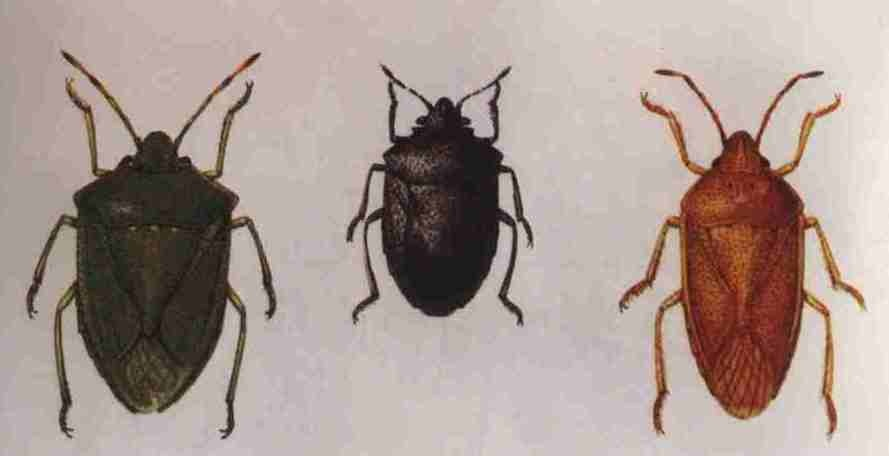

害虫名称：稻绿蝽
分类地位：半翅目蝽科
分布范围：分布广泛
为害特点：食性杂，除为害水稻外，还为害玉米、大豆、小麦等。以成虫、若虫刺吸茎叶和稻穗汁液，影响水稻生长和结实。
形态特征：成虫体长12－15．5毫米，宽6－8.5毫米，全身青绿色。小盾板长三角形，前缘有3个横列的小白点，其末端超过腹部中央。足绿色，附节灰褐色。卵杯型，顶端周缘有一环白色小齿，中心降起，初产时淡黄色，后变为灰褐色。若虫共5龄，末龄若虫长7．4－10毫米，青绿色。 稻蝽(左:绿蝽 中:黑蝽 右:褐蝽)
发病规律：稻绿蝽在淮河以北地区1年发生1代，淮河以南发生2－3代。以成虫越冬。稻绿蝽有群集性。卵多产于叶片上，2－6行排列成块状。每卵块30－70粒卵。成虫有强趋光性。越冬期间体色常由绿色变为紫褐色，越冬后又转为绿色。初孵若虫群集于卵壳上，2－3龄若虫仍多群集为害，4龄后分散为害。
防治方法：1 农业措施 冬春清洁田园，铲除田边、沟边杂草，清洁稻田附近作物地的枯枝落叶，减少越冬虫源。2．药剂防治 在成虫迁入稻田高峰期或2－3龄若虫期，每666.7平方米用25％喹硫磷乳油 100毫升，或4O％水胺硫磷乳油100毫升，或90％晶体敌百虫125克，加水50――60千克，在傍晚喷施。